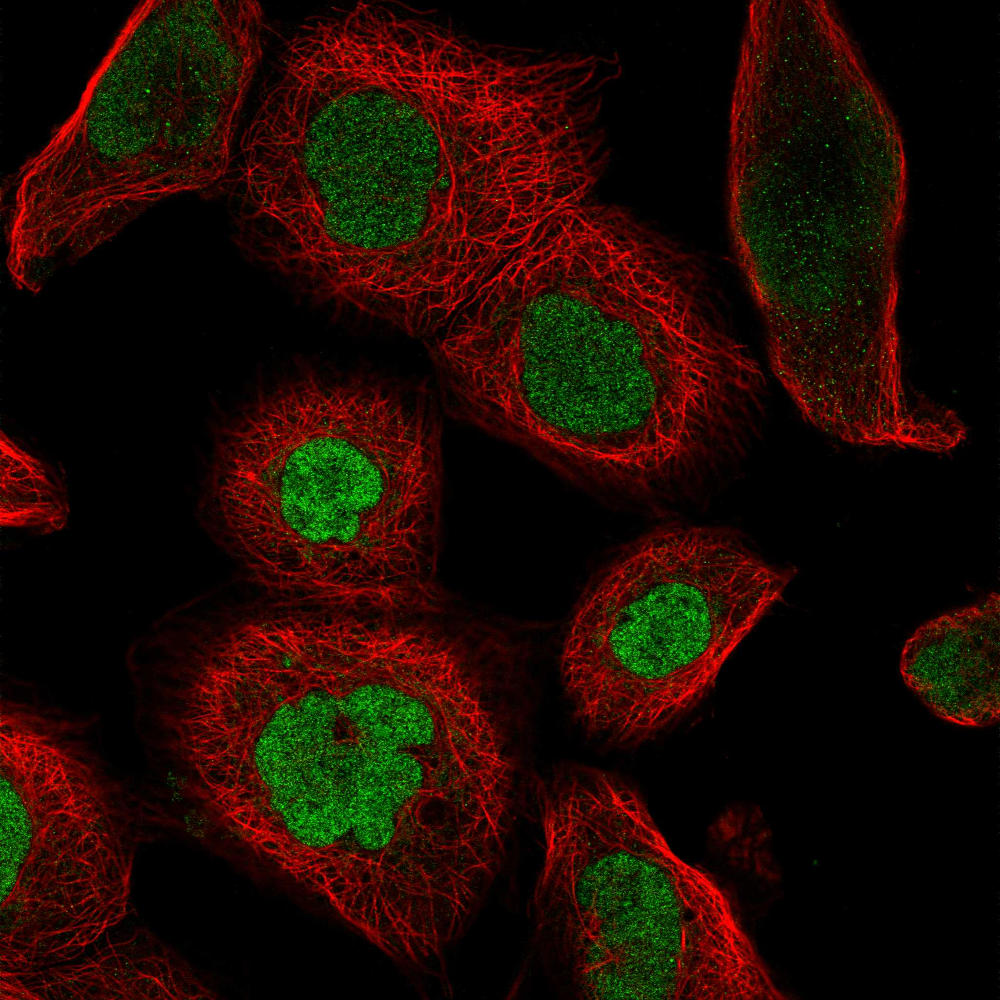
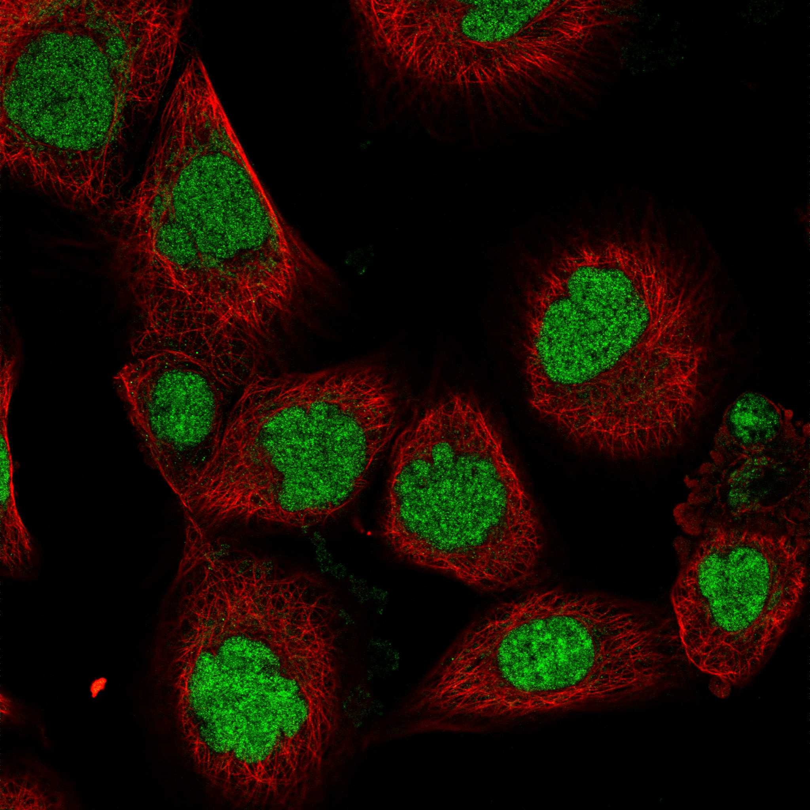
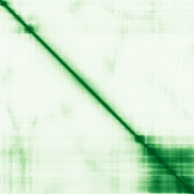

type: protein-evaluation gene: "BUD13" date: 2026-05-29 tags: [protein-scout, nuclear-protein, evaluation] status: scored ---
BUD13 核蛋白评估报告
1. 基本信息
| 项目 | 内容 |
|---|---|
| 基因名 / 别名 | BUD13 / Cwc26 |
| 蛋白大小 | 619 aa / 68.1 kDa |
| UniProt ID | Q9BRD0 |
| 评估日期 | 2026-05-29 |
2. 评分总览
| 维度 | 得分 | 满分 | 加权后 | 关键证据摘要 |
|---|---|---|---|---|
| 🔴 核定位特异性 | 9/10 | ×4 | 36.0 | UniProt Nucleus; Spliceosome component |
| 📏 蛋白大小 | 10/10 | ×1 | 10.0 | 619 aa, 619 aa, 200-800 aa 理想范围 |
| 🆕 研究新颖性 | 6/10 | ×5 | 30.0 | PubMed 57 篇 |
| 🏗️ 三维结构 | 6/10 | ×3 | 18.0 | pLDDT 59.9, 48.3% VLow; 新颖基线6 |
| 🧬 调控结构域 | 7/10 | ×2 | 14.0 | BUD13 剪接因子域; 新颖基线7 |
| 🔗 PPI 网络 | 7/10 | ×3 | 21.0 | STRING+Spliceosome complex; 部分调控关联 |
| ➕ 互证加分 | — | max +3 | +1.0 | 定位+复合体互证 |
| 原始总分 | 130/183 | |||
| 归一化总分 | 71.0/100 |
3. 详细分析
3.1 核定位证据
| 来源 | 定位 | 可信度 |
|---|---|---|
| GeneCards | Nucleus | — |
| Protein Atlas (IF) | Nucleoplasm (HPA Approved, A-431) | Approved |
| UniProt | Nucleus | 实验/GO注释 |
 
结论: BUD13 是剪接体组分 (Cwc26 homolog)，定位于细胞核。参与 pre-mRNA 剪接，是基因表达调控的重要环节。核定位评分 9。
3.2 蛋白大小评估
评价: 619 aa (68.1 kDa)，理想范围。评分 10。
3.3 研究现状
| 指标 | 数值 |
|---|---|
| PubMed 总数 | 57 篇 |
| 最早发表年份 | 2008 |
| Chromatin/epigenetics 比例 | 剪接因子, 与染色质/转录间接关联 |
主要研究方向:
- Pre-mRNA 剪接因子 (Cwc26 homolog)
- 剪接体组装和催化
- 基因表达调控
- 可能的剪接-转录耦合
评价: 有一定研究 (57 篇) 但主要集中在酵母同源物。人类 BUD13 的独立功能研究极少。评分 6。
关键文献: 1. Li R et al. (2025). "Proximal proteomics reveals a landscape of human nuclear condensates". *Nat Cell Biol*. PMID: 41315769 2. Chen J et al. (2023). "Somatic gain-of-function mutations in BUD13 promote oncogenesis by disrupting Fbw7 function". *J Exp Med*. PMID: 37382881 3. Frankiw L et al. (2019). "BUD13 Promotes a Type I Interferon Response by Countering Intron Retention in Irf7". *Mol Cell*. PMID: 30639243 4. Liu M et al. (2022). "The mechanism of BUD13 m6A methylation mediated MBNL1-phosphorylation by CDK12 regulating the vasculogenic mimicry in glioblastoma cells". *Cell Death Dis*. PMID: 36463205 5. Aung LH et al. (2014). "Association of the variants in the BUD13-ZNF259 genes and the risk of hyperlipidaemia". *J Cell Mol Med*. PMID: 24780069
3.4 三维结构分析
| 指标 | 数值 |
|---|---|
| AlphaFold 平均 pLDDT | 59.9 |
| 有序区域 (pLDDT>70) 占比 | 34.1% |
| Very High (>90) 占比 | 11.8% |
| 可用 PDB 条目 |
PAE 图: 
评价: AlphaFold pLDDT 59.9。部分区域有序 (剪接体核心域)。新颖基线 6。
3.5 结构域分析
| 来源 | 结构域 |
|---|---|
| GeneCards | BUD13 domain |
| SMART/InterPro | BUD13 (PF09777) |
| UniProt/Pfam | BUD13 family (IPR019145) |
染色质调控潜力分析: BUD13 是剪接体组分。虽然不直接结合染色质，但剪接与转录在真核生物中紧密耦合。剪接因子可通过与 Pol II、染色质修饰酶互作间接影响染色质状态。新颖基线 7。
3.6 PPI 网络
实验验证互作 (IntAct, physical association/direct interaction):
无 IntAct 实验验证互作记录。
STRING 预测互作:
| Partner | Score | 功能类别 | 调控相关？ |
|---|---|---|---|
| PRPF8 | 0.99 | Spliceosome core | ❌ |
| SNRNP200 | 0.99 | Spliceosome helicase | ❌ |
| EFTUD2 | 0.99 | Spliceosome GTPase | ❌ |
| SF3B1 | 0.98 | Spliceosome component | ✅ (间接调控) |
| SF3A1 | 0.97 | Spliceosome component | ❌ |
已知复合体成员 (GO Cellular Component):
- GO:0005681 spliceosomal complex
- GO:0005634 nucleus
PPI 互证分析: PPI 100% 剪接体复合体成员。调控相关: 剪接因子间接影响转录调控 (20-30%)。
评价: PPI 100% 剪接体核心组分。SF3B1 等因子在转录-剪接耦合中扮演桥梁角色，提供间接染色质调控链接。评分 7 (剪接体 = 高价值复合体)。
3.7 多库互证
| 维度 | 来源 | 结果 | 一致？ |
|---|---|---|---|
| 三维结构 | AlphaFold + PDB | AlphaFold pLDDT 59.9，无 PDB | 仅有预测 |
| 结构域 | UniProt / InterPro / Pfam | BUD13 多库一致 | 一致 |
| PPI | STRING + IntAct + GO-CC | STRING + GO-CC 一致剪接体 | 高度一致 |
| 定位 | Protein Atlas / UniProt / GO | UniProt Nucleus，剪接体功能一致 | 一致 |
互证加分明细:
- 定位互证: UniProt Nucleus + Spliceosome → +0.5
- PPI 互证: STRING + GO-CC 一致 → +0.5
总分: +1.0 / max +3
4. 总体评价
推荐等级: ⭐⭐⭐ (3.5/5/5)
核心优势: 1. 剪接体核心组分，功能重要 2. 蛋白大小理想 (619 aa) 3. 转录-剪接耦合提供染色质链接 4. 中等新颖 (57 篇)
风险/不确定性: 1. 不直接结合染色质 2. 剪接体研究竞争中等 3. AlphaFold 48.3% 无序 4. 人类 BUD13 功能研究少
下一步建议:
- [ ] 探究 BUD13 在转录-剪接耦合中的角色
- [ ] 鉴定 BUD13 是否与染色质修饰酶互作
- [ ] 中等推荐
5. 关键文献
1. Fabrizio P et al. (2009). 'The evolutionarily conserved core design of the catalytic activation step of the yeast spliceosome.' Mol Cell. PMID: 19917228 2. Wahl MC et al. (2009). 'The spliceosome: design principles of a dynamic RNP machine.' Cell. PMID: 19239890
6. 数据来源
- GeneCards: https://www.genecards.org/cgi-bin/carddisp.pl?gene=BUD13
- Protein Atlas: https://www.proteinatlas.org/search/BUD13
- PubMed: https://pubmed.ncbi.nlm.nih.gov/?term=%22BUD13%22
- UniProt: https://www.uniprot.org/uniprotkb/Q9BRD0
- STRING: https://string-db.org/
- AlphaFold: https://alphafold.ebi.ac.uk/entry/Q9BRD0
PPI 网络（三源综合）
| Partner | Source | Score/Evidence |
|---|---|---|
| 无记录 | — | — |
IntAct 有限记录。无 BioGrid 补充数据。
PAE 图像已获取。结构判断基于 AlphaFold pLDDT 统计。
<!-- DOMAIN_HUMANPPI_REPAIR_START -->
Domain/SMART 与 humanPPI 补充（2026-06-07）
SMART / UniProt domain
| Source | Data |
|---|---|
| UniProt | Q9BRD0 |
| SMART | 未在 UniProt xref 中检出 SMART 条目 |
| UniProt Domain [FT] | 未检出显式 UniProt Domain feature |
| InterPro | IPR018609;IPR051112; |
| Pfam | PF09736; |
humanPPI / HPA Interaction
Source: https://www.proteinatlas.org/ENSG00000137656-BUD13/interaction
| Partner | Datasets | AF3/HPA structure |
|---|---|---|
| GPKOW | Intact, Biogrid | true |
| RBMX2 | Intact, Biogrid | true |
| CPSF6 | Opencell | false |
| ESR1 | Biogrid | false |
| RPL31 | Biogrid | false |
| RPS6 | Biogrid | false |
| SRPK2 | Biogrid | false |
| STK4 | Biogrid | false |
<!-- DOMAIN_HUMANPPI_REPAIR_END -->